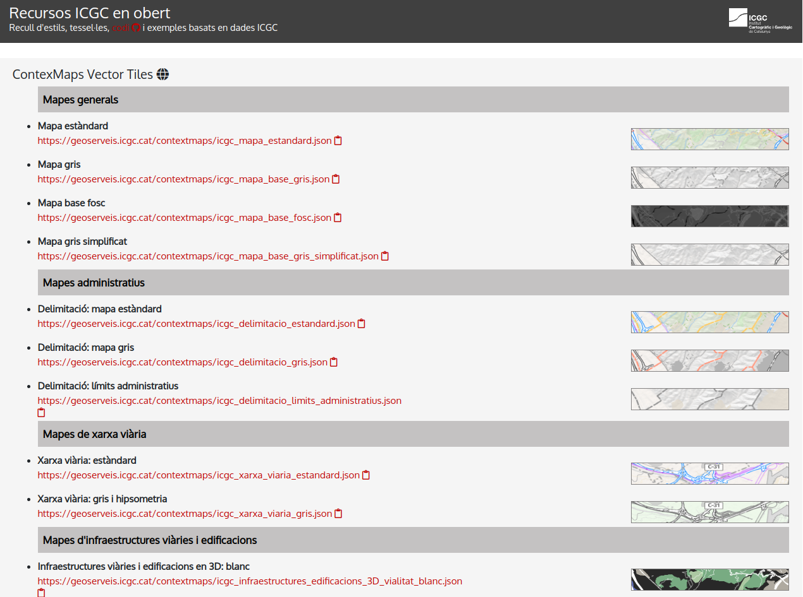

14. Mapas personalizados con Maputnik y MapBox GL JS
Introducción
Podemos trabajar con la libreria MapBox GL JS sin utilizar los estilos de Mapbox
Si la versión de la libreria és anterior a la v2 tampoco haria falta especificar el Access Token
Podemos editar estilos sin utilizar MapBox Studio, directamente con Maputnik

¿ Cuando utilizar los servicios de MapBox?
-
Cuando tenemos un dataset grande.Mapbox nos ofrece hasta 300mb por archivo
-
Cuando necesitamos utilitzar alguno de sus servicios (geocoding, routing) o sus estilos
-
Cuando necesitamos alta disponibilidad
¿ Cuando NO utilizar los servicios de MapBox?
- Cuando necesito trabajor con cartografia oficial
- Cuando tengo dataset pequeños (< 50.000 geometrias)
- Cuando solo visualizo terceros servicios
¿Dónde podemos encontrar estilos vector-tiles?
- https://openicgc.github.io/
- https://cloud.maptiler.com/maps/
- https://www.ordnancesurvey.co.uk/business-government/products/open-zoomstack
- https://www.thunderforest.com/docs/vector-maps-api/
OpenICGC.
-
Es un web con recursos y servicios open del Institut Cartográfic i Geològic de Catalunya
-
Presenta estilos y bases Vector Tiles mundiales dónde fusiona datos OSM y del ICGC en un esquema de OpenMapTiles

Mapa estilo ICGC
-
Seleccionaremos el estilo ICGC de OpenICGC
-
Creamos archivo mapbox-icgc.html
<html>
<head>
<meta charset='utf-8' />
<title>Topogáfico</title>
<meta name='viewport' content='initial-scale=1,maximum-scale=1,user-scalable=no' />
<script src='https://api.mapbox.com/mapbox-gl-js/v2.6.1/mapbox-gl.js'></script>
<link href='https://api.mapbox.com/mapbox-gl-js/v2.6.1/mapbox-gl.css' rel='stylesheet' />
<link href='css/estilobase.css' rel='stylesheet' />
<script>
function init() {
mapboxgl.accessToken ='pk.eyJ1IjoiZ2lzbWFzdGVybTIiLCJhIjoiY2plZHhubTQxMTNoYzMza3Rqa3kxYTdrOCJ9.53B1E6mKD_EQOVb2Y0-SsA';
var map = new mapboxgl.Map({
container: 'map',
style: 'https://geoserveis.icgc.cat/contextmaps/icgc.json',
center: [2.16859, 41.3954],
zoom: 13,
hash: true,
pitch: 45,
attributionControl: false
});
map.addControl(new mapboxgl.AttributionControl({
compact: true
}));
map.addControl(new mapboxgl.NavigationControl());
}
</script>
</head>
<body onload="init()">
<div id='map'></div>
</body>
</html>
Editar estilo con Maputnik
-
Seleccionaremos el estilo Full dark de OpenICGC
-
Vamos al editor de Maputnik https://maputnik.github.io/editor/
-
Open-->Load from Url-->Pegamos URL -->Open URL -
Canviamos colores del estilos de forma libre
-
Export-->Download--> Guardamos en /geoweb/datos/miestilo.json
¿Subimos el estilo al GitHub?
git pull
git add .
git commit -m "mi estilo"
git push
Mapa estilo propio
- Creamos archivo mapbox-miestilo2.html
<html>
<head>
<meta charset='utf-8' />
<title>Mi estilo</title>
<meta name='viewport' content='initial-scale=1,maximum-scale=1,user-scalable=no' />
<script src='https://api.mapbox.com/mapbox-gl-js/v2.6.1/mapbox-gl.js'></script>
<link href='https://api.mapbox.com/mapbox-gl-js/v2.6.1/mapbox-gl.css' rel='stylesheet' />
<link href='css/estilobase.css' rel='stylesheet' />
<script>
function init() {
mapboxgl.accessToken ='pk.eyJ1IjoiZ2lzbWFzdGVybTIiLCJhIjoiY2plZHhubTQxMTNoYzMza3Rqa3kxYTdrOCJ9.53B1E6mKD_EQOVb2Y0-SsA';
var map = new mapboxgl.Map({
container: 'map',
style: 'https://gis-master-m2.github.io/geoweb/datos/miestilo.json', // o 'datos/miestilo.json'
center: [2.16859, 41.3954],
zoom: 13,
hash: true,
pitch: 45,
attributionControl: false
});
map.addControl(new mapboxgl.AttributionControl({
compact: true
}));
map.addControl(new mapboxgl.NavigationControl());
}
</script>
</head>
<body onload="init()">
<div id='map'></div>
</body>
</html>
Añadir datos propios sin crear tilesets en MapboxStudio
Para archivos muy grandes no es recomendable
- Añadimos un GeoJson local , como un nuevo source
GeoJSON
Es el constructor principal del mapa https://docs.mapbox.com/mapbox-gl-js/style-spec/#sources-geojson
<html>
<head>
<meta charset='utf-8' />
<title>Mi estilo</title>
<meta name='viewport' content='initial-scale=1,maximum-scale=1,user-scalable=no' />
<script src='https://api.mapbox.com/mapbox-gl-js/v2.6.1/mapbox-gl.js'></script>
<link href='https://api.mapbox.com/mapbox-gl-js/v2.6.1/mapbox-gl.css' rel='stylesheet' />
<link href='css/estilobase.css' rel='stylesheet' />
<script>
function init() {
mapboxgl.accessToken ='pk.eyJ1IjoiZ2lzbWFzdGVybTIiLCJhIjoiY2plZHhubTQxMTNoYzMza3Rqa3kxYTdrOCJ9.53B1E6mKD_EQOVb2Y0-SsA';
var map = new mapboxgl.Map({
container: 'map',
style: 'https://gis-master-m2.github.io/geoweb/datos/miestilo.json',
center: [2.16859, 41.3954],
zoom: 13,
hash: true,
pitch: 45,
attributionControl: false
});
map.addControl(new mapboxgl.AttributionControl({
compact: true
}));
map.addControl(new mapboxgl.NavigationControl());
map.on('load', function () {
map.addSource("carrils-bici", {
type: "geojson",
data: "datos/carrils-bici.geojson"
}); //fin map source
map.addLayer({
id: "carrils-bici-layer",
type: "line",
source: "carrils-bici",
layout: {
"line-join": "round",
"line-cap": "round"
},
paint: {
"line-color": "#FF0000",
"line-width": 8
}
}); //fin add layers
}); //Fin load mapa
}
</script>
</head>
<body onload="init()">
<div id='map'></div>
</body>
</html>
¿Subimos el ejemplo al GitHub?
git pull
git add .
git commit -m "mi mapa bàsico"
git push